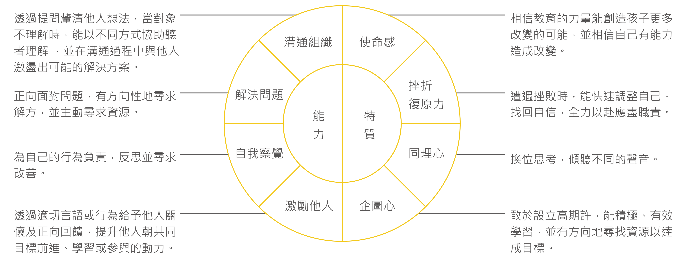
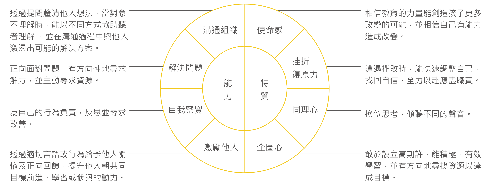

計畫報名採線上報名系統申請，不接受其他管道報名。請由TFT官網進入TFT線上報名系統，於註冊帳號後，線上填寫報名表。報名表共分為四大區塊：基本資料、專業經歷、簡答題、附件區。
計畫報名採線上報名系統申請，不接受其他管道報名。請由TFT官網進入TFT線上報名系統，於註冊帳號後，線上填寫報名表。報名表共分為四大區塊：基本資料、專業經歷、簡答題、附件區。
TFT甄選將依據TFT所重視的核心信念特質與能力進行甄選，並邀請偏遠地區學校校長、教育界教授學者、企業界顧問與TFT團隊代表擔任評審。本屆預計錄取正取約35名與儲備10名成為TFT受訓教師，進入暑期密集培訓。
甄選分為三個階段：
各階段採獨立計分，擇優錄取。各階段面試內容與細節，將個別以e-mail通知通過審查之申請者。第四屆TFT教師計畫錄取名單，第一梯次將於2017年4月12日、第二梯次將於2017年5月10日通知錄取者，並於官網及粉絲頁同步公告。
關於書面資料與面試
建議你在準備書審與面試時，盡可能切中問題的核心，充分展現自己的特質與能力。在描述過去經歷時，多加強調你在該事件扮演的角色、帶來的影響與心得，以及與成為TFT教師之關聯性。
關於試教
一個成功的教師應能流暢進行課程、讓學生融入課程及教材中。在規劃教學方法時，考量到學生的年紀，並在時間內達成學習目標。
建議您於事前做足充分的準備與練習，確保在試教時闡述明確的教學目標，保持課程良好的節奏，並在時間內順利完成。
在規劃課程時，你可以問自己這些問題：第四屆TFT教師申請有兩個梯次，先送件先審理，請於報名截止時間前完整送件，逾時概不受理。
完整的甄選流程約需一個月時間，您可以選擇時間上最適合您的梯次進行報名，確保自己有足夠的時間為各個申請階段做準備，並請務必提前空出面試時段，以利作業。詳情請看招募簡章。
我們依據八大特質甄選合適之申請者，建議您可以依這八大特質為核心來回憶過去的經歷，這將對您的申請有很大的幫助。
書面申請是我們認識您的第一步，因此務必完整如實填寫每一道題目，讓我們有機會更全面地認識您。
如果，你認同一位好老師有改變的可能，那麼請你加入TFT，帶領孩子看見他的全世界。 現在，你更有機會找到志同道合的夥伴，一起合作、一起虛心學習、一起接受挑戰、一起付諸實行，在最需要你的地方，用你最珍貴的時間，造成最大的改變。 你想要的未來，從你開始！讓我們一起用教育來創造最大的社會價值。